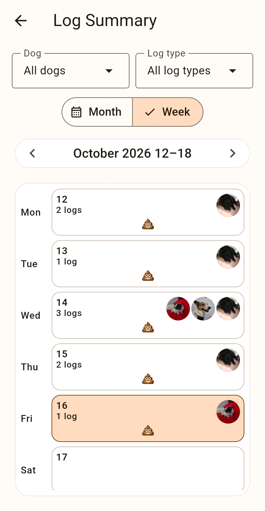
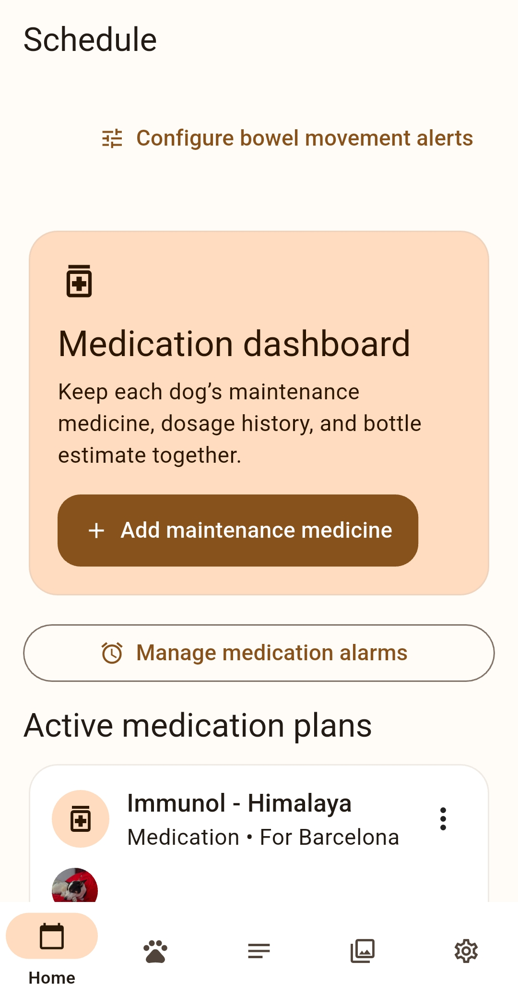
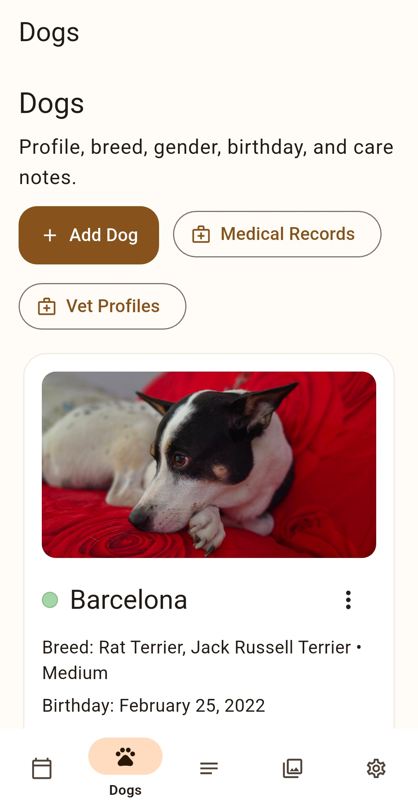
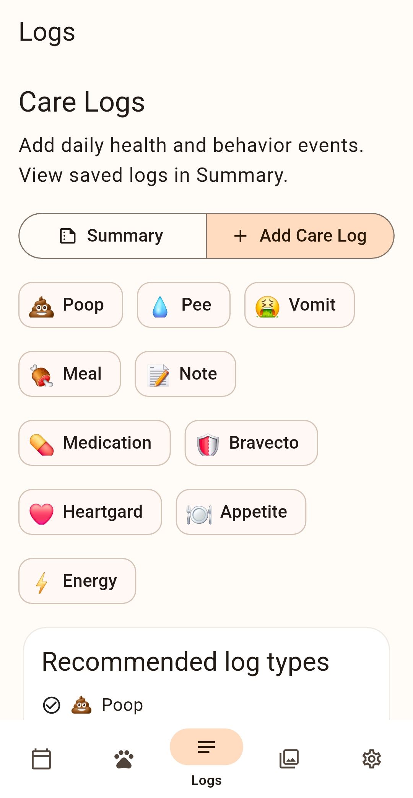

Dog Care Planner
Personal app In active developmentAn in-progress, local-first Android app I use and test personally to organize a dog's daily care, medication, veterinary history, and care logs. It keeps essential records, schedules, and photos together while giving owners control over backup and restore.
Key capabilities
- Dog profiles with photos, medical records, vaccinations, heat-cycle tracking, and veterinarian history.
- Recurring medication, vitamin, prevention, and deworming plans with flexible intervals and advance reminders.
- Month and week log calendars with daily care details, notes, and photo-based dog identification.
- Structured veterinary visits, including reason, diagnosis, tests, X-ray details, and weight tracking.
- User-controlled full backup and restore through local storage, Google Drive, OneDrive, and nearby device transfer.




Source code: Private